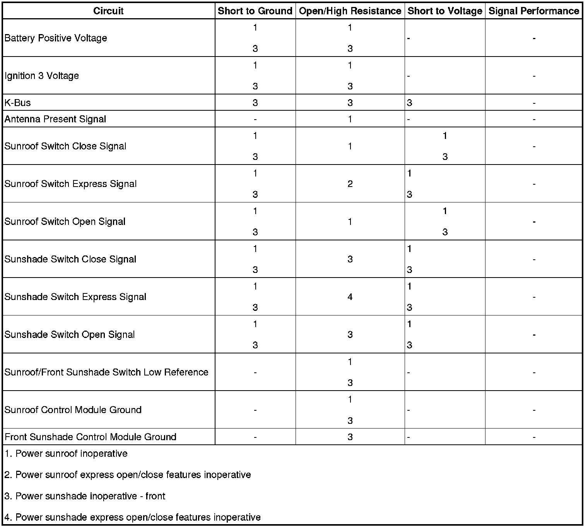

Power Sunroof Malfunction
Power Sunroof Malfunction
Diagnostic Instructions
* Perform the Diagnostic System Check - Vehicle (Initial Inspection and Diagnostic Overview) prior to using this diagnostic procedure.
* Review Strategy Based Diagnosis (Initial Inspection and Diagnostic Overview) for an overview of the diagnostic approach.
* Diagnostic Procedure Instructions (Initial Inspection and Diagnostic Overview)provides an overview of each diagnostic category.
Diagnostic Fault Information

Circuit/System Description
The sunroof control module is located between the headliner and the roof structure, while the sunroof switch is located above the rearview mirror. Battery positive voltage is supplied to the module from the SUNROOF MOD fuse located in the right rear fuse block. Ignition voltage is applied to the module from the body control module (BCM) with the ignition in the RUN or ACC positions, refer to Retained Accessory Power (RAP) Description and Operation (Retained Accessory Power (RAP) Description and Operation) for domestic vehicles and Power Mode Description and Operation (Power Mode Description and Operation) for export vehicles. The sunroof module supplies voltage to the sunroof switch through the sunroof switch open and close signal circuits. Ground is supplied to the sunroof switch from the switch ground circuit and G401. When the roof open or closed switch is pressed, ground is applied through the switch contacts and the appropriate signal circuit to the module. The module then internally applies battery voltage and ground to the appropriate circuits of the reversible sunroof motor in order to move the roof glass panel to the open or closed positions.
The front sunshade control module and motor assembly contains the logic for opening and closing the front sunshade based on input supplied on the K-Bus from the sunroof switch through the sunroof control module and motor assembly. The sunshade control module internally applies battery voltage and ground to the appropriate circuits of the reversible sunshade motor in order to move the sunshade panel to the open or closed positions.
Diagnostic Aids
* The sunroof control module is also referenced as the sunroof motor/actuator.
* The sunshade control module is also referenced as the sunshade motor/actuator.
* Because of the accessibility of the sunroof switch, perform the sunroof switch component test before beginning the circuit/system testing.
* A short to B+ on any one of the sunroof or sunshade switch signal circuits will open the switch. This fault is not covered in the circuit/system testing.
* If the front glass and/or front sunshade are experiencing an intermittent inoperative condition, check the sunroof switch ground circuit for an open condition. If the sunroof switch ground circuit is open, the switch may take a redundant path to ground through the illumination circuit. When the lights are turned ON, the redundant path is removed, and the sunroof and/or sunshade will become inoperative.
* If voltage is not measured on the sunroof switch open signal or sunroof switch close signal circuits, the fault could be in the RAP relay switch supply voltage circuit, battery positive voltage circuit, or front glass control module ground circuit. If the front glass control module is not being powered, neither will the sunroof switch signal circuits.
Reference Information
Schematic Reference
Sunroof Schematics (Electrical Diagrams)
Connector End View Reference
Component Connector End Views (Connector Views)
Description and Operation
Sunroof Description and Operation (Sunroof Description and Operation)
Electrical Information Reference
* Circuit Testing (Component Tests and General Diagnostics)
* Connector Repairs (Component Tests and General Diagnostics)
* Testing for Intermittent Conditions and Poor Connections (Component Tests and General Diagnostics)
* Wiring Repairs (Component Tests and General Diagnostics)
Circuit/System Testing
Power Sunroof Inoperative
1. Ignition OFF, disconnect the harness connector at the sunroof/front sunshade switch.
2. Test for less than 5.0 ohms of resistance between the ground circuit terminal 5 and ground.
• If greater than the specified range, test the ground circuit for an open/high resistance.
3. Ignition ON, connect a 3A fused jumper wire between the following sunroof switch signal circuits and ground. The roof should be inoperative in at least one or more directions.
* Roof open terminal 8
* Roof close terminal 2
• If the roof moved in both directions, replace the sunroof/front sunshade switch.
4. Ignition OFF, disconnect the harness connector at the sunroof control module.
5. Test for less than 5.0 ohms of resistance between the ground circuit terminal 2 and ground.
• If greater than the specified range, test the ground circuit for an open/high resistance.
6. Test for less than 5.0 ohms of resistance between the antenna present signal circuit terminal 3 and ground.
• If greater than the specified range, test the signal circuit for an open/high resistance.
7. Ignition ON, verify that a test lamp illuminates between the B+ circuit terminal 4 and ground.
• If the test lamp does not illuminate, test the B+ circuit for a short to ground or an open/high resistance.
8. Verify that a test lamp illuminates between the ignition voltage circuit terminal 5 and ground.
• If the test lamp does not illuminate, test the ignition voltage circuit for a short to ground or an open/high resistance. If the circuit tests normal, refer to Retained Accessory Power (RAP) Malfunction (Retained Accessory Power (RAP) Malfunction) for domestic vehicles and Power Mode Mismatch (Power Mode Mismatch) for export vehicles.
9. Ignition OFF, connect the sunroof control module harness connector.
10. Ignition ON, at the sunroof switch harness connector, test for B+ between the sunroof switch signal circuits listed below and ground.
* Roof open terminal 8
* Roof close terminal 2
• If less than the specified value, test the signal circuit for a short to ground or an open/high resistance. If the circuit test normal, replace the sunroof control module.
11. If all circuit test normal, replace the sunroof control module.
Power Sunroof Express Feature Inoperative
1. Ignition OFF, disconnect the harness connector at the sunroof/front sunshade switch.
2. Ignition ON, with the sunroof in the closed position, connect a 3A fused jumper wire between the sunroof open switch signal circuit terminal 8 and the sunroof express signal circuit terminal 7 to ground for less than 1 second. The roof should express open.
• If the roof did not express open, test the express signal circuit for a short to ground or an open/ high resistance. If the circuit tests normal, replace the sunroof control module.
3. If all circuits test normal, replace the sunroof/front sunshade switch.
Component Testing
Sunroof Switch
1. With the ignition OFF, disconnect the harness connector at the sunroof/front sunshade switch.
2. Test for infinite resistance between the switch terminals listed below and the ground circuit terminal 5 with the switch in the open position.
* Shade express terminal 1
* Roof close terminal 2
* Shade open terminal 4
* Shade close terminal 6
* Roof express terminal 7
* Roof open terminal 8
• If not the specified value, replace the sunroof switch.
3. Test for less than 5 ohms of resistance between the switch terminals listed below and the ground circuit terminal 5 with the switch in the closed position.
* Shade express terminal 1
* Roof close terminal 2
* Shade open terminal 4
* Shade close terminal 6
* Roof express terminal 7
* Roof open terminal 8
• If greater than the specified range, replace the sunroof/front sunshade switch.
Repair Instructions
Perform the Diagnostic Repair Verification (Verification Tests) after completing the diagnostic procedure.
* Sunroof Switch Replacement (Service and Repair)
* Control Module References (Programming and Relearning)for sunroof control module replacement, setup, and programming